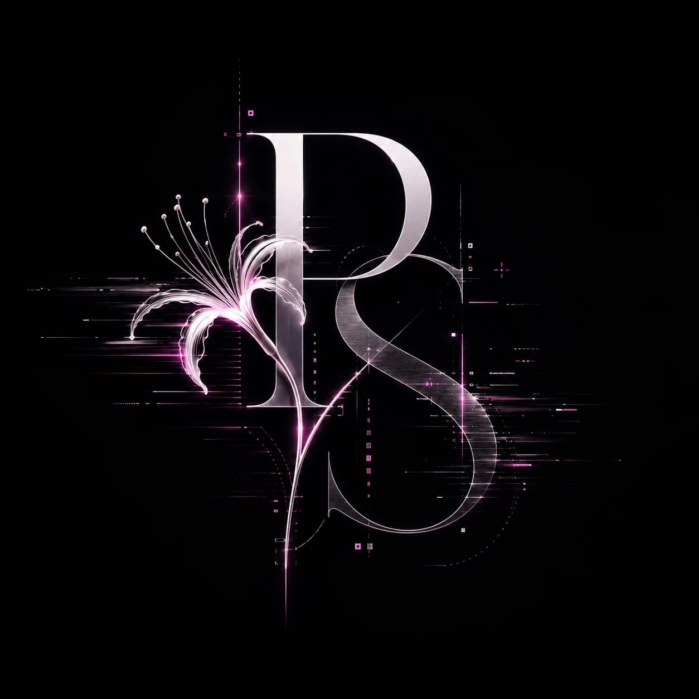

Paola Sanz.
Content creator and video editor
From Concept To Connection.
Enter portfolioCREATIVE OS / STARTUP
Audiovisual portfolio

Content creator and video editor
From Concept To Connection.
Enter portfolioAUDIOVISUAL PORTFOLIO
Content creator and video editor
I’m looking to join a content, communications or marketing team. I’ve produced, edited and published work for social media and editorial outlets.